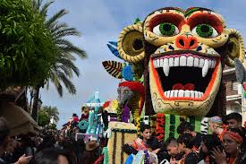
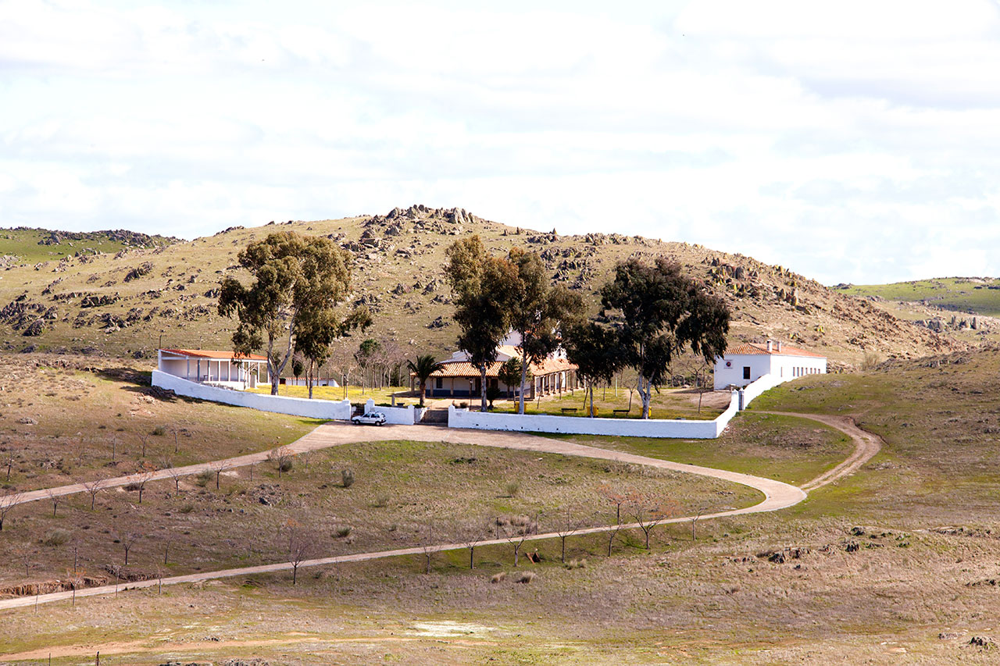

Tradicciones
El lunes de Pascua, se celebra la principal fiesta de la localidad de Campanario.
Se trata de la Romería de Piedraescrita, una fiesta que gira en torno a la patrona la Virgen de Piedraescrita.
Su principal atractivo es el espectacular desfile de carrozas, carretas y caballerías engalanadas para la ocasión.
Desfile que se desarrolla por las calles y el centro del pueblo. Lo más destacado de las carrozas
es que son autenticas obras de arte realizadas de papel de seda y pegadas con «pucha»,
una mezcla de harina y agua. Tienen un gran colorido y los motivos son de lo más diverso.

Una vez terminado el desfile, los romeros se dirigen a la ermita de Piedraescrita, declarada Bien de Interés Cultural,
ubicada en la finca Los Barrancos, a unos 5 kilómetros del pueblo.
Aquí se desarrollan actos religiosos terminado con un día de campo en los alrededores.
Cuenta la leyenda que el origen de la Virgen de Piedraescrita
fue en el siglo XIII al ser descubrierto un resto funerario de origen romano (Ara) en él había una inscripción
“a Lucio Valerio Lucio Fabio Calixto, Silvano Victello Valeriano: vencedores”, y junto a ésta se encontraba la
imagen de la Virgen.
